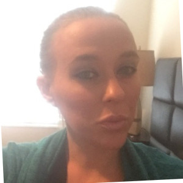

Hi, I'm Phoebe Endsley
I'm a software developer living in Elizabeth City, North Carolina.
I'm a passionate tech enthusiast with a keen eye for:
- Crafting visually stunning web designs backed by top-notch code.
- Building elegant and practical websites that enhance user experiences.
Explore my website and don't hesitate to reach out for further inquiries.
About
I'm a new web developer with a passion for creating beautiful and functional websites.
I have some experience in HTML, CSS, JavaScript, and Node.js, and I enjoy working on both front-end and back-end development.
I love learning new technologies and frameworks and always look for new challenges and opportunities to improve my skills.
I believe that web development is about writing code and collaborating with other developers, designers, and clients.
I value teamwork, communication, and feedback from users.
When I'm not coding, I like to spend my time reading, hiking, and playing guitar.
I also have a keen interest in photography and graphic design, and I often use these skills to enhance my web projects.
I'm always open to new ideas and experiences, and I'm eager to connect with other web developers and enthusiasts.